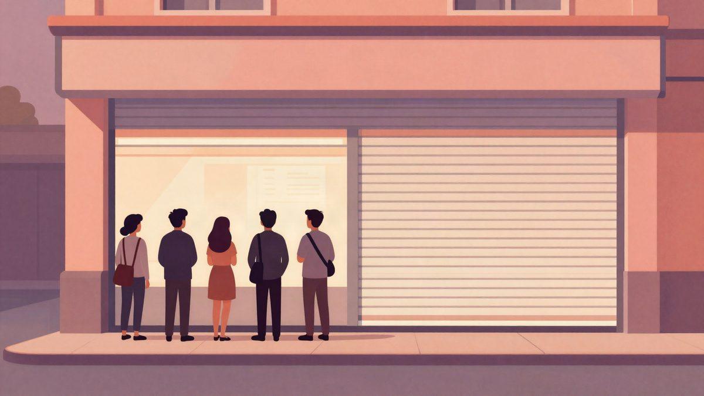
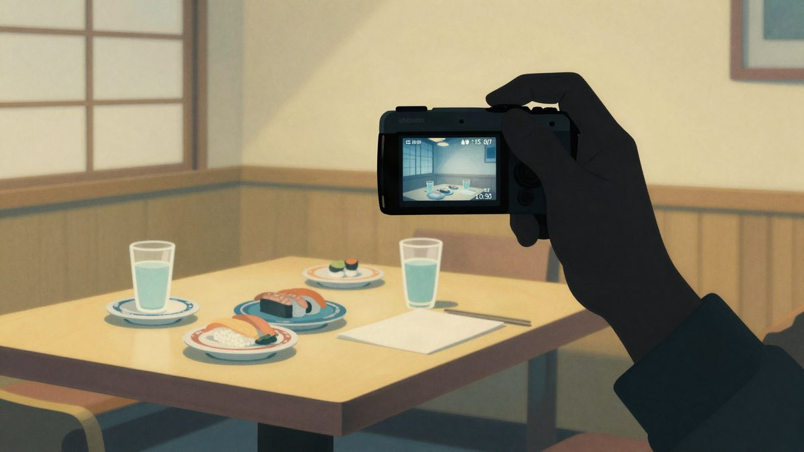

Predsjednik Paragvaja podnio je ostavku nakon sloma digitalne banke Ueno i zamrznutih računa 3 milijuna klijenata

Predsjednik Paragvaja Santiago Peña podnio je ostavku nakon što je središnja banka preuzela digitalnu banku Ueno zbog ozbiljne nesolventnosti. Oko 3 milijuna klijenata ostalo je bez pristupa računima, a tužiteljstvo je podiglo optužnice protiv 27 čelnika banke i povezanih osoba. Ostatak mandata po Ustavu preuzima potpredsjednik Pedro Alliana.
Predsjednik Paragvaja Santiago Peña objavio je ostavku nakon što je središnja banka preuzela digitalnu banku Ueno zbog ozbiljne nesolventnosti. Oko 3 milijuna klijenata ostalo je bez pristupa računima. U zemlji od otprilike 6,5 milijuna stanovnika to je pogodilo gotovo polovicu populacije i izazvalo financijsku i političku krizu.
Peña je u javnom obraćanju rekao da odlazi radi stabilnosti zemlje, društvenog mira i demokratskih institucija, a rješavanje pitanja novca štediša mora biti prioritet. Ustav predviđa da nakon prihvaćanja ostavke u parlamentu ostatak mandata preuzima potpredsjednik Pedro Alliana.
Kako je Ueno pao
Kriza je počela istragom središnje banke. Regulator je utvrdio da je Ueno odobravao velik broj nedovoljno dokumentiranih kredita tvrtkama povezanima s vlasnicima banke i da je u bilancu upisivao troškove koji nisu imovina. Nakon korekcije financijskih podataka kapital banke pao je ispod polovice zakonskog minimuma, pa je regulator preuzeo banku.
Nakon preuzimanja prestali su raditi mobilna aplikacija, kartična plaćanja i transferi, a više poslovnica je zatvoreno. Štediše nisu mogle podizati depozite ni koristiti sredstva na računima, uključujući plaće i naknade.
Upozorenja su postojala i ranije. Paragvajski mediji javili su još u lipnju da su nadzornici otkrili rizične kredite povezanim tvrtkama. Istraga je pokazala da je dio kredita premašivao zakonske limite i nije imao dovoljno kolaterala.
Optužbe i uhićenja
Tužiteljstvo je podiglo optužnice protiv 27 čelnika banke i povezanih osoba, među ostalim zbog zlouporabe povjerenja i pokušaja prijevare. Tužiteljstvo tvrdi da je dio novca odobrenog povezanim tvrtkama kasnije prebačen u druge poslove grupe. Sud je odredio istražni zatvor za šest čelnika, među njima osnivača Miguela Vázqueza i predsjednika banke Juana Manuela Gustalea, a dvojici je određen kućni pritvor. Svi su se nakon izdavanja naloga sami javili pravosuđu.
Odvjetnik Gustalea tvrdi da vrh uprave ne odlučuje o pojedinačnim kreditima nego se oslanja na stručne timove, pa odgovornost ne bi trebalo prebacivati na upravu.
Brza ekspanzija i javni novac
Ueno je prije više desetljeća bio financijska tvrtka, a nakon rebrandinga je 2023. dobio bankovnu licencu. Brzo je rastao uz visoki cashback na potrošnju i u manje od pet godina postao jedan od najpoznatijih financijskih brendova u zemlji. Sam tvrdi da među klijentima ima više od 60 % odraslih. Imao je više od 70 poslovnica, sponzorirao je nogometnu reprezentaciju i imao pravo imenovanja glavnog stadiona, a oznake su se nakon izbijanja krize počele uklanjati.
Banka je prošlog mjeseca prijavila oko 800 milijuna dolara (oko 690 milijuna eura) depozita javnog sektora, otprilike četvrtinu svih depozita. Novac dolazi iz mirovinskog sustava, zdravstvenih fondova i operatera velike hidroelektrane.
Kritičari upozoravaju na bliske veze Peñine vlade i Uena. Peña je ranije imao poslovne odnose s grupom Vázquez koja kontrolira banku, a guverner središnje banke Carlos Carvallo, kojeg je Peña postavio, ranije je vodio Uenovu prethodnicu. Carvallo je ovaj tjedan odstupio na zahtjev predsjednika.
Utjecaj na tržište
Parlament je pokrenuo postupak opoziva, a podrška unutar vladajuće koalicije počela je slabiti. Klijenti su masovno otvarali račune u drugim bankama, pa su aplikacije nekoliko njih privremeno bile preopterećene. Cijene državnih obveznica pale su, a lokalna valuta guarani znatno je oslabjela. Za štediše koji čekaju odmrzavanje sredstava i isplate kriza još nije gotova.
Izvor: cnBeta
Povezani članci
 SAD su zaustavile sve domaće letove više od četiri sata: otkazano preko 5.100 letova, Duffy traži 50 milijardi dolara13. studenoga 2026.
SAD su zaustavile sve domaće letove više od četiri sata: otkazano preko 5.100 letova, Duffy traži 50 milijardi dolara13. studenoga 2026. Asobuview: procurilo 15,8 milijuna zapisa o članovima preko dobavljača mail usluge Arala4. studenoga 2026.
Asobuview: procurilo 15,8 milijuna zapisa o članovima preko dobavljača mail usluge Arala4. studenoga 2026.
Twitch streamer Lacy u Tokiju zbog QR koda na stolu dobio lažne narudžbe od oko 9.500 eura30. listopada 2026.